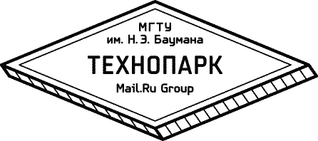

ГЛАВНАЯ
Материалы курса «Фронтенд разработка», читаемого во втором семестре
Технопарка Mail.ru.
Содержание:
1.1 Фронтенд. Введение. (Слайды)
1.1 Инструменты. Настройка окружения для разработки. (Слайды)
1.2 Архитектура и отладка веб-приложений (Слайды)
1.3 HTML формы. AJAX. (Слайды)
2.1 HTML, CSS (Слайды)
2.2 Работа с DOM, Events (Слайды)
2.3 Основы работы с Canvas (Слайды)
2.4 Современный JavaScript (Слайды)
3 AJAX, хранение данных и отладка
3.1 Сетевое асинхронное взаимодествие (Слайды)
3.2 Хранение данных на клиенте (Слайды)
3.3 Инструменты разработчика и профилирование JavaScript (Слайды)
4 Производительность и мобильный веб
4.1 Производительность (Слайды)
4.2 Возможности смартфонов (Слайды)
